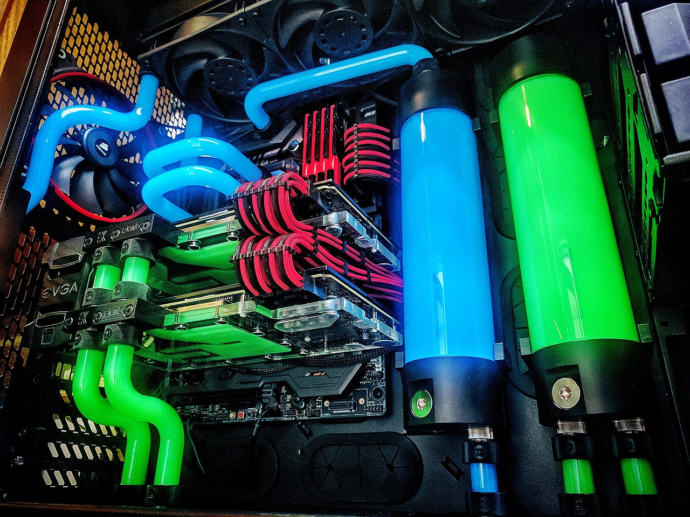
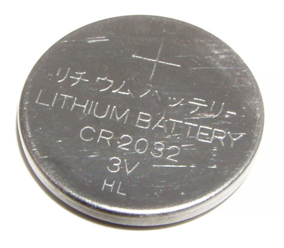

Auxiliary elements¶
- Power supply
The power supply is the component that is responsible for feeding with low voltage electrical energy and in direct current (5V and 12V) to all the components of the computer.
The power supply must have enough power (watts) to power all the components, but it must also have enough current <https://www.muycomputer.com/2018/10/14/guia-fuente-de-alimentacion/ >`__ (amps) to power the graphics card, which is usually the component with the highest current demand.
In mobile phones and tablets, the power source is usually a plug adapter with a USB-C output. Many of these adapters are designed to deliver increasing power, so it's not uncommon to find adapters from 18W to 80W or more, where previously USB chargers barely reached 10W.
- Uninterruptible Power Supply (UPS)
An uninterruptible power supply or UPS (in English UPS) is a device with a rechargeable battery inside, which can provide electrical power to a computer or other devices during a power outage.
The change in operation during a power outage is so rapid that the computer does not actually shut down and may continue to function for a few minutes until normal power is restored or the computer is shut down gracefully.
- Air cooling
The air cooling is used in the most powerful computers (for example, a laptop or a PC), to extract outside the box the heat generated by its circuits. Fans are typically used above the CPU, on the graphics card, and on the power supply, although there may be more fans to evacuate heat from the case.
Fans are usually the noisiest elements of a computer, which is why some lower-performance computers use conventional ventilation systems (without fans) to avoid noise.
Another system that allows large amounts of heat to be removed with little noise is liquid cooling, although its price is higher than air cooling.
- Liquid refrigeration
The liquid refrigeration is a cooling technique that uses water or another liquid as a cooling medium . It is much more efficient than air cooling and produces less noise, although it has the disadvantage of being much more expensive.
Interior of a personal computer with liquid cooling.¶
Red flame, CC BY-SA 4.0, via Wikimedia Commons.- Box
The computer case is the metallic or plastic structure that serves to house, support and protect the different components of the computer.
There are a multitude of box formats <https://es.wikipedia.org/wiki/Caja_de_computadora#Tipos_de_caja>`__ of various sizes and purposes, from a small barebone type box to a large tower type box, rack type for servers or laptop or tablet casings.
- Button cell
The motherboard battery is a button-type battery that is responsible for powering the real-time clock and the RAM-CMOS memory that stores the BIOS options while the computer is turned off. This is usually a CR-2032 model button cell.
When this battery wears out after several years of use, the clock stops keeping current time and resets to its start time, plus BIOS settings are lost. All this causes the computer to not work normally or not work at all.
The solution to this problem is simple because a spare battery can be found at any store and replacement is relatively easy to perform.
CR-2032 button battery, the most common in motherboards.¶
Krzysztof Woźnica, Public Domain, via Wikimedia Commons.- Real time clock
The RTC or real time clock is a small integrated circuit that acts as a clock, keeping the current date and time even when the computer is turned off. It is usually accompanied by a small button-type battery to power it. Its consumption is very low, so the battery can last several years in operation.
The real time clock is used to assign the current date and time to created files or to synchronize with Internet services
- Modding
The modding derives from the English word modify (modify) and is the art or technique of modifying the aesthetics of a personal computer by adding lights, images, transparent walls , etc.

Modification of the chassis with aluminum, acrylic and RGB leds.¶
Aquatic, CC BY-SA 4.0, via Wikimedia Commons.
{kind=link}
{kind=link}
{kind=link}